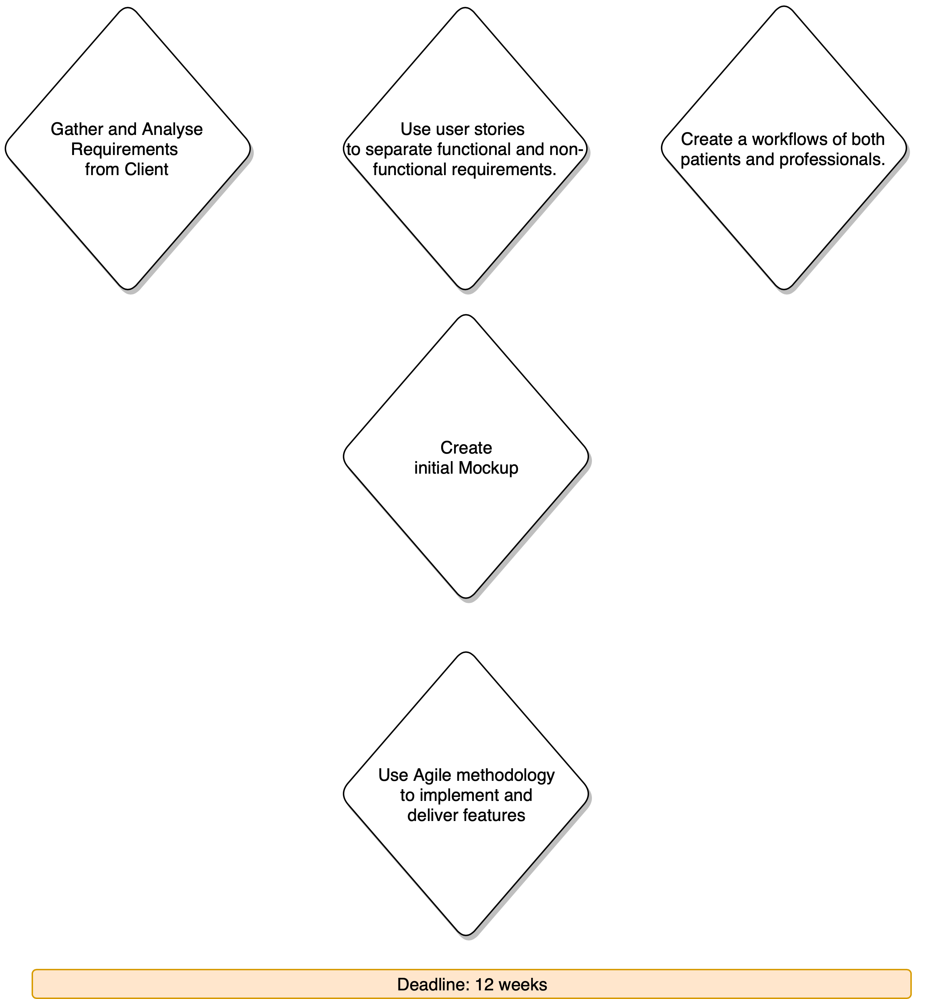
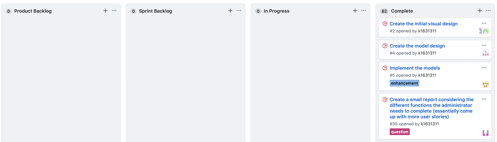
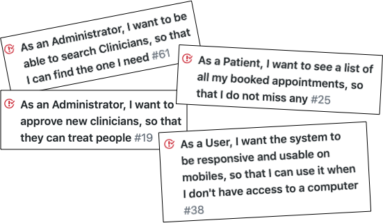
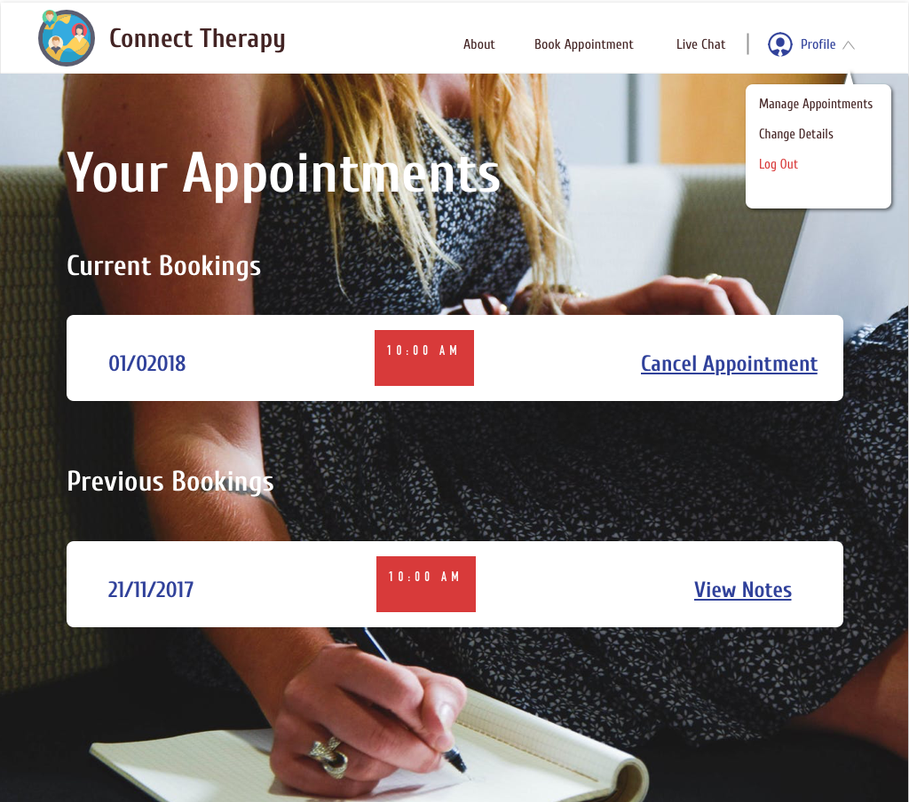

Connect Therapy Web App
01: Problem and Process
Design and implement a MVP prototype which allows parents to create a profile, book appointments and chat via video or text with a healthcare professional. There should be separate login portals for normal users(parents), and admin(professionals).
The user stories were used to identify the features that we would need to implement. These were used for the sprints in a kanban board. Each spring lasted 2 weeks.
Some examples of these stories are shown below.
02: Mockup
This is the screen that is shown once a patient logs into the system.
(Please note that these mockups are the ones initially designed. Final designs are unavailable.)
A patient can select the date and time for their appointment.
Booked appointments are shown on this screen. They can view their session notes and or cancel any upcoming appointments. In the final version both the patients and professionals can share files during the live chat.